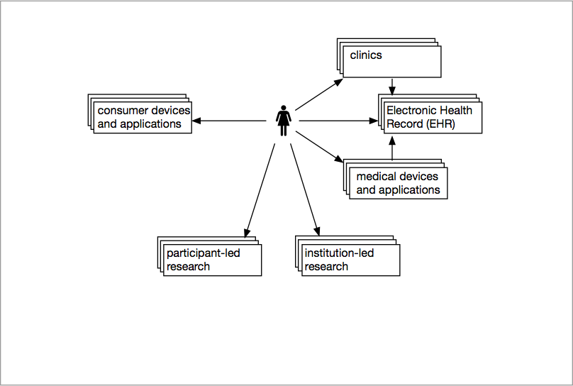
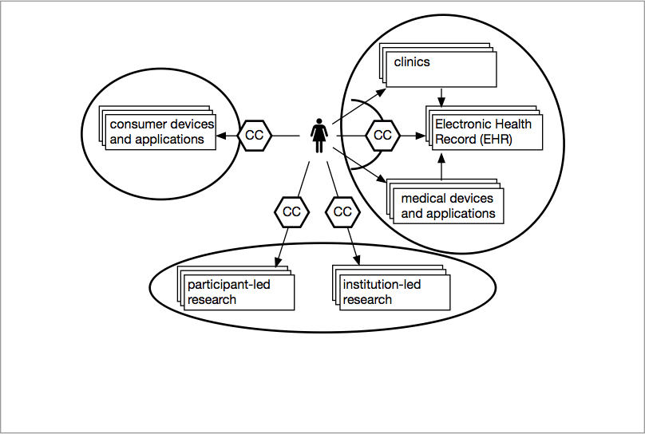
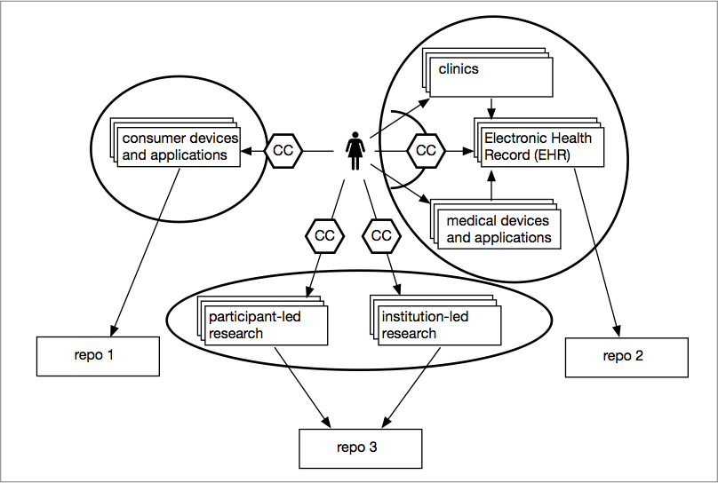
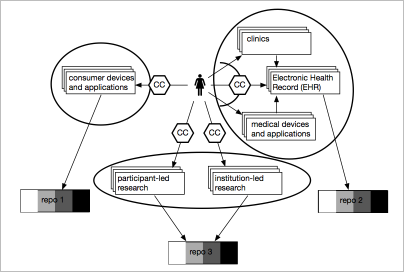
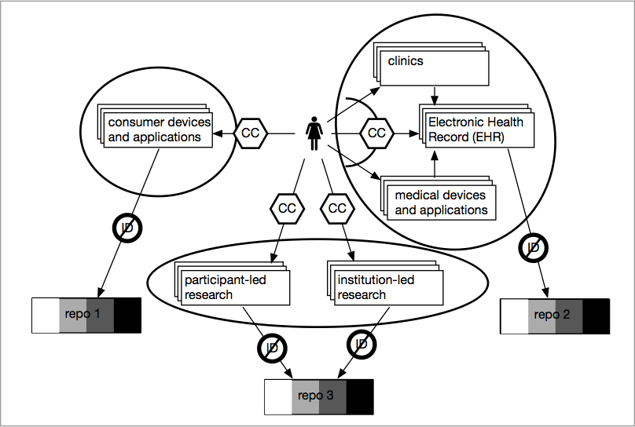
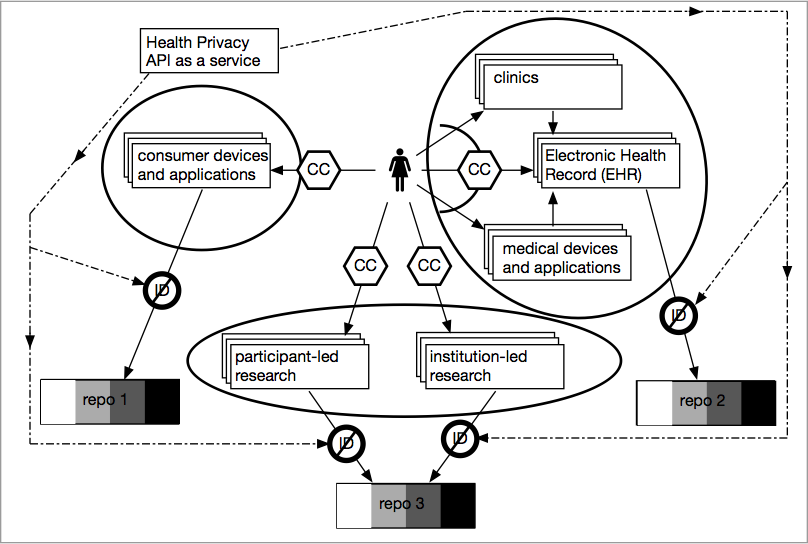
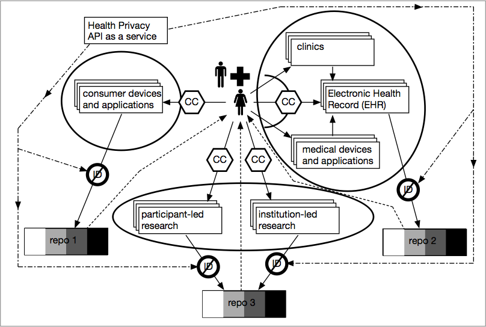
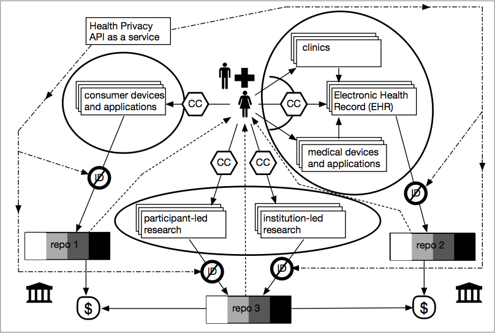

name: intro class: center, middle # Citizen-Sourced Data Commons ## • Puneet Kishor (Plazi) Released under a [CC0 Public Domain Dedication](https://creativecommons.org/publicdomain/zero/1.0/). <div class="slidefooter"> <a href="/Citizen-Sourced-Data-Commons"><img src="/_lib/img/PunkishEidesisOrg-small.gif"></a> <a rel="license" href="https://creativecommons.org/publicdomain/zero/1.0/"><img src="/_lib/img/zero.png" alt="CC0" width="30" height="30"></a> <div class="navlinks"> <a href="javascript:slideshow.gotoPreviousSlide()">prev</a> <a href="javascript:slideshow.gotoNextSlide()">next</a> </div> </div> --- layout: true <div class="slidefooter"> <a href="/Citizen-Sourced-Data-Commons"><img src="/_lib/img/PunkishEidesisOrg-small.gif"></a> <a rel="license" href="https://creativecommons.org/publicdomain/zero/1.0/"><img src="/_lib/img/zero.png" alt="CC0" width="30" height="30"></a> <div class="navlinks"> <a href="javascript:slideshow.gotoPreviousSlide()">prev</a> <a href="javascript:slideshow.gotoNextSlide()">next</a> </div> </div> --- ## Help * Notes are hidden, but may be seen by pressing **P** on your keyboard. * Press **C** to clone a show. * Press **H** for other keyboard shortcuts. ??? notes here --- .left-column[ ### researchers don't share ] .right-column[ because - academic pressures - fear of getting scooped - pressure to publish ] --- .left-column[ ### researchers don't share ] .right-column[ because - academic pressures - fear of getting scooped - pressure to publish - health/medical specific pressures - fear of leaking PHI - ethical considerations - IRB ] --- .left-column[ ### researchers don't share ### clinicians don't share ] .right-column[ because - regulatory hurdles - ethical considerations - technological lock-in ] --- .left-column[ ### researchers don't share ### clinicians don't share ### consumer device makers don't share ] .right-column[ because - don't want to lose the strategic advantage - technological lock-in ] --- ## The only solution * public generates, protects and holds data * easy to understand (and give) consent is key * assignment of rights makes attribution easy * contractual commons ensure everyone plays by the rules * a damage-mitigation mechanism provides a safety-net --- <div class="center"></div> **Citizen’s Data** --- <div class="center"></div> **Citizen’s Data** via **Different Sources** --- <div class="center"></div> **Citizen’s Data** via **Different Sources** that are **Qualitatively Different,** --- <div class="center"></div> **Citizen’s Data** via **Different Sources** that are **Qualitatively Different,** with [**Citizens Consent**](Citizens-Consent), --- <div class="center"></div> **Citizen’s Data** via **Different Sources** that are **Qualitatively Different,** with [**Citizens Consent**](Citizens-Consent), are stored in [**Consolidated Repos**](Perfect-Health-Repo-Desiderata) --- <div class="center"></div> **Citizen’s Data** via **Different Sources** that are **Qualitatively Different,** with [**Citizens Consent**](Citizens-Consent), are stored in [**Consolidated Repos**](Perfect-Health-Repo-Desiderata) making data available at **Varying Levels of Openness** --- <div class="center"></div> **Citizen’s Data** via **Different Sources** that are **Qualitatively Different,** with [**Citizens Consent**](Citizens-Consent), are stored in [**Consolidated Repos**](Perfect-Health-Repo-Desiderata) making data available at **Varying Levels of Openness** and **De-Identification** --- <div class="center"></div> **Citizen’s Data** via **Different Sources** that are **Qualitatively Different,** with [**Citizens Consent**](Citizens-Consent), are stored in [**Consolidated Repos**](Perfect-Health-Repo-Desiderata) making data available at **Varying Levels of Openness** and **De-Identification** made possible by a [**Health Privacy API**](Health-Privacy-API). --- <div class="center"></div> **Citizen’s Data** via **Different Sources** that are **Qualitatively Different,** with [**Citizens Consent**](Citizens-Consent), are stored in [**Consolidated Repos**](Perfect-Health-Repo-Desiderata) making data available at **Varying Levels of Openness** and **De-Identification** made possible by a [**Health Privacy API**](Health-Privacy-API). The repos are managed by a [**Shared Governance**](Governance-Model-for-Health-Repo) --- <div class="center"></div> **Citizen’s Data** via **Different Sources** that are **Qualitatively Different,** with [**Citizens Consent**](Citizens-Consent), are stored in [**Consolidated Repos**](Perfect-Health-Repo-Desiderata) making data available at **Varying Levels of Openness** and **De-Identification** made possible by a [**Health Privacy API**](Health-Privacy-API). The repos are managed by a [**Shared Governance**](Governance-Model-for-Health-Repo) enabling **Reuse** --- <div class="center"></div> **Citizen’s Data** via **Different Sources** that are **Qualitatively Different,** with [**Citizens Consent**](Citizens-Consent), are stored in [**Consolidated Repos**](Perfect-Health-Repo-Desiderata) making data available at **Varying Levels of Openness** and **De-Identification** made possible by a [**Health Privacy API**](Health-Privacy-API). The repos are managed by a [**Shared Governance**](Governance-Model-for-Health-Repo) enabling **Reuse** and **Commercial and Other Services** --- <div class="center"></div> **Citizen’s Data** via **Different Sources** that are **Qualitatively Different,** with [**Citizens Consent**](Citizens-Consent), are stored in [**Consolidated Repos**](Perfect-Health-Repo-Desiderata) making data available at **Varying Levels of Openness** and **De-Identification** made possible by a [**Health Privacy API**](Health-Privacy-API). The repos are managed by a [**Shared Governance**](Governance-Model-for-Health-Repo) enabling **Reuse** and **Commercial and Other Services** that along with **Foundations and the Government**, --- <div class="center"></div> **Citizen’s Data** via **Different Sources** that are **Qualitatively Different,** with [**Citizens Consent**](Citizens-Consent), are stored in [**Consolidated Repos**](Perfect-Health-Repo-Desiderata) making data available at **Varying Levels of Openness** and **De-Identification** made possible by a [**Health Privacy API**](Health-Privacy-API). The repos are managed by a [**Shared Governance**](Governance-Model-for-Health-Repo) enabling **Reuse** and **Commercial and Other Services** that along with **Foundations and the Government**, sustain this **Citizen-Sourced Data Commons** --- <div class="center"></div> **Citizen’s Data** via **Different Sources** that are **Qualitatively Different,** with [**Citizens Consent**](Citizens-Consent), are stored in [**Consolidated Repos**](Perfect-Health-Repo-Desiderata) making data available at **Varying Levels of Openness** and **De-Identification** made possible by a [**Health Privacy API**](Health-Privacy-API). The repos are managed by a [**Shared Governance**](Governance-Model-for-Health-Repo) enabling **Reuse** and **Commercial and Other Services** that along with **Foundations and the Government**, sustain this **Citizen-Sourced Data Commons** and its [**Damage Mitigation Fund and Strategy**](Three-Locks).